Soal 1
Mana dari ke-5 ini yang paling TIDAK mirip dengan 4 yang lain?

Pilih satu jawaban untuk setiap soal. Pada soal bergambar, ikuti pilihan yang tertera pada gambar.
Memuat status tes…
Buka pilihan tesPilihan disimpan sementara di tab ini. Klik Submit jawaban pada soal terakhir untuk melihat hasil penilaian.
Mana dari ke-5 ini yang paling TIDAK mirip dengan 4 yang lain?
Jika Anda mengatur ulang kata-kata "LINKECI", maka Anda akan mendapat nama sebuah:
Mana dari ke-5 gambar ini yang paling melengkapi kalimat gambar tersebut?
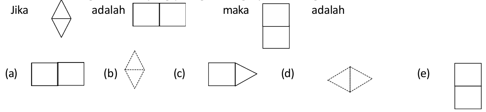
Mana dari ke-5 ini yang paling TIDAK mirip dengan 4 yang lain?
Mana dari ke-5 gambar ini yang paling melengkapi kalimat gambar tersebut?
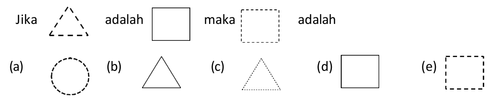
Saat ini John berumur 12 tahun, yaitu 3 kali lebih tua dari adiknya. Berapa umur John saat umurnya 2 kali lebih tua dari umur adiknya?
Jika "Kakak Laki-Laki" itu "Kakak Perempuan", maka "Keponakan Perempuan" adalah:
Mana dari ke-5 ini yang paling TIDAK mirip dengan 4 yang lain?
Jika "Susu" itu "Gelas", maka "Surat" itu:
Mana dari ke-5 yang paling TIDAK mirip dengan 4 yang lain?
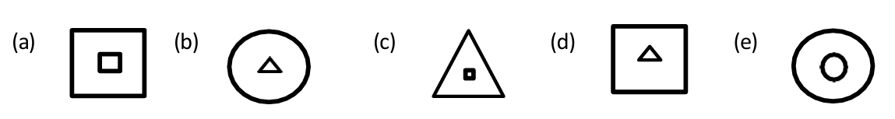
Jika "HIDUP" itu "PUDIH" maka 5232 adalah:
"Jika beberapa Smaugs adalah Thors dan beberapa Thors adalah Thrains, maka beberapa Smaugs pasti adalah Thrains." Pernyataan ini adalah:
Mana dari ke-5 ini yang paling TIDAK mirip dengan 4 yang lain?
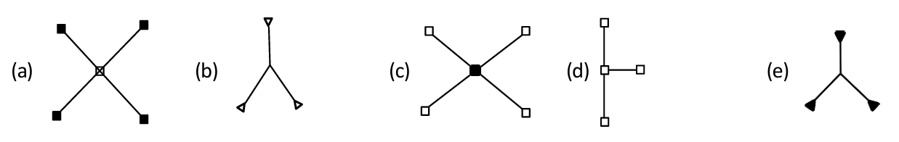
Jika "Pohon" itu "Tanah" maka "Cerobong Asap" itu:
Mana dari angka-angka ini yang TIDAK masuk ke dalam urutan di bawah ini?
9 - 7 - 8 - 6 - 7 - 5 - 6 - 3
Mana dari ke-5 ini yang paling TIDAK mirip dengan 4 yang lain?
Mana dari ke-5 gambar ini yang paling melengkapi kalimat gambar tersebut?
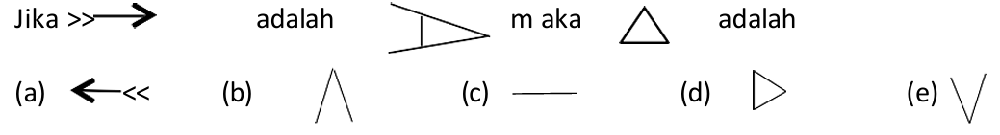
Jack lebih tinggi dari Peter, dan Bill lebih pendek dari Jack. Mana kalimat yang paling akurat?
Mana dari ke-5 ini yang paling TIDAK mirip dengan 4 yang lain?
Jika "CAACCAC" adalah "3113313" maka "CACAACAC" adalah:
Jika Anda mengatur ulang kata "RAPIS", maka Anda akan mendapat nama sebuah:
Mana dari ke-5 ini yang paling TIDAK mirip dengan 4 yang lain?
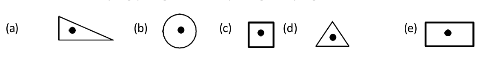
Jika "Peluru" adalah "Senjata" maka "Bola Api" adalah:
"Jika beberapa Bifurs adalah Bofurs dan semua Gloins adalah Bofurs, maka beberapa Bifurs pasti adalah Gloins." Pernyataan ini adalah:
Mana dari ke-5 ini yang paling TIDAK mirip dengan 4 yang lain?
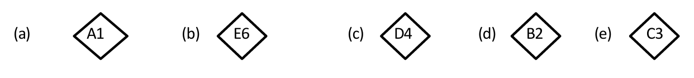
Mana dari angka-angka ini yang TIDAK masuk ke dalam urutan di bawah ini?
A - D - G - I - J - M - P - S
Mana dari ke-5 gambar ini yang paling melengkapi kalimat gambar tersebut?
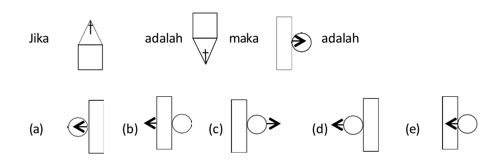
Harga dari sebuah baju di-discount 20% untuk sebuah acara tahunan. Berapa % baju tersebut harus di-naik-kan dari harga discount tersebut, sehingga harga baju tersebut menjadi sama dengan awalnya?
Mana dari ke-5 ini yang paling TIDAK mirip dengan 4 yang lain?
Mana dari ke-5 gambar ini yang paling melengkapi kalimat gambar tersebut?
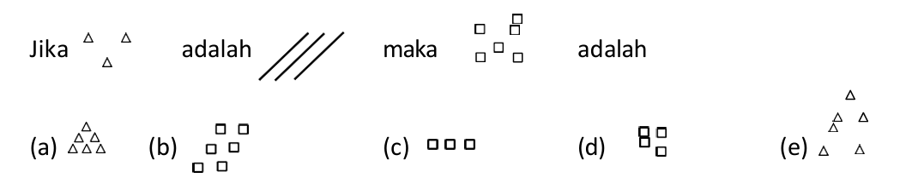
Mana dari ke-5 ini yang paling TIDAK mirip dengan 4 yang lain?
Mari memiliki beberapa kue. Setelah makan 1 kue, Mary memberikan 1/2 dari sisanya untuk adiknya. Setelah makan 1 kue lagi, Mary memberikan 1/2 dari sisanya untuk adiknya. Mary sekarang hanya memiliki 5 kue. Berapakah jumlah awal kue yang dimiliki Mary?
Mana dari ke-5 ini yang paling TIDAK mirip dengan 4 yang lain?
Mana dari angka-angka ini yang TIDAK masuk ke dalam urutan di bawah ini?
2 - 3 - 6 - 7 - 8 - 14 - 15 - 30
Mana dari ke-5 gambar ini yang paling melengkapi kalimat gambar tersebut?
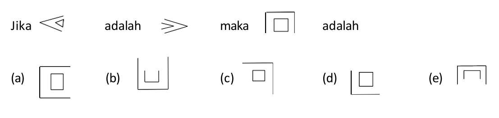
"Sebuah pesawat ruang angkasa menerima 3 pesan dalam bahasa yang aneh dari sebuah planet di kejauhan. Para astronot mempelajari pesan-pesan tersebut dan menemukan bahwa: 'Elros Aldarion Elendil' berarti 'Bahaya Ledakan Roket' 'Edain Mnyatur Elros' berarti 'Bahaya Kebakaran Pesawat Ruang Angkasa' 'Aldarion Gimilizor Gondor' berarti 'Ledakan Gas Yang Buruk'. Apakah arti dari 'Elendil'?"
Mana dari ke-5 gambar ini yang paling TIDAK mirip dengan 4 yang lain?
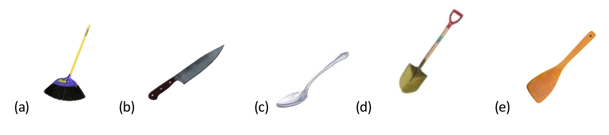
"Jika 'GESPER' adalah 'Kepala Gesper', maka 'SEPATU' adalah:"
Mana dari ke-5 gambar ini yang paling TIDAK mirip dengan 4 yang lain?
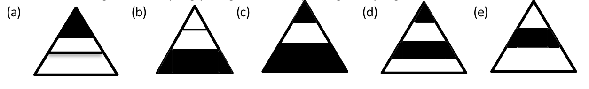
John menerima USD 0.41 sebagai kembalian dari pembeliannya di apotik. Jika Jhon menerima 6 koin, maka ketiga dari koin-koin tersebut harusnya:
Mana dari ke-5 gambar ini yang paling TIDAK mirip dengan 4 yang lain?
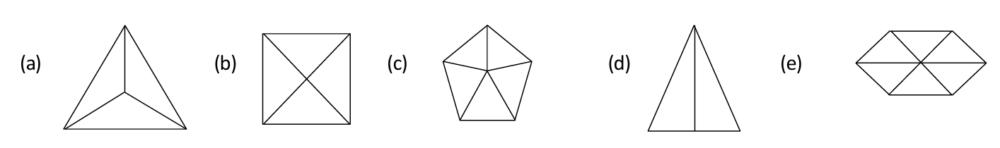
Jika Anda mengatur ulang kata-kata "RMANJE", maka anda akan mendapat nama sebuah:
Which one of the five designs makes the best comparison?
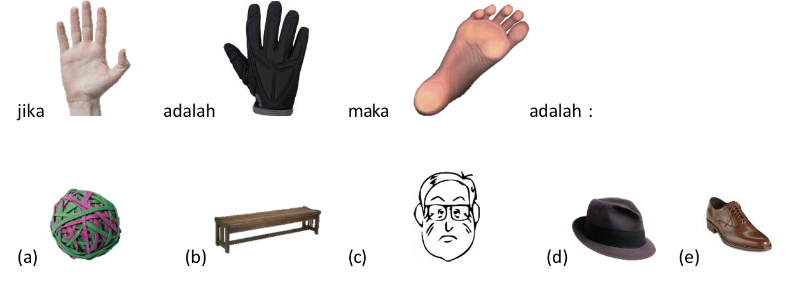
"Jika semua Wargs adalah Twerps dan tidak ada Twerps yang merupakan Gollums maka tidak ada Gollums yang pasti adalah Wargs." Pernyataan ini adalah:
Mana dari ke-5 ini yang paling TIDAK mirip dengan 4 yang lain?
Mana dari gambar ini yang TIDAK sesuai dengan urutan gambar-gambar ini?
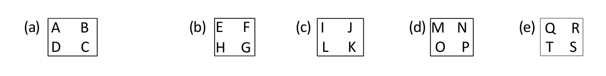
Jika "Jari" adalah "Tangan" maka "Daun" adalah:
"Ibunya John mengirimkannya ke toko untuk membeli 9 kotak besar jeruk. John hanya dapat membawa 2 kotak dalam sekali jalan. Berapa kali ia harus bolak-balik ke toko?"
Mana dari gambar ini yang TIDAK sesuai dengan urutan gambar-gambar ini?
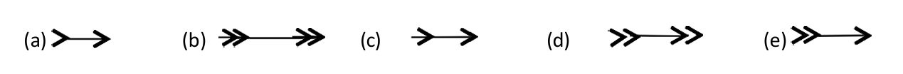
Jika "Kaki" adalah "Lutut", maka "Tangan" adalah:
Mana gambar yang paling mengikuti logika dari diagram di bawah ini?
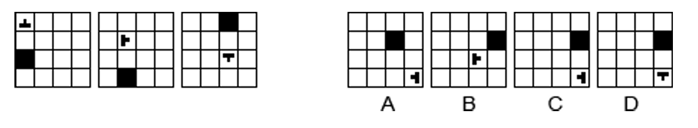
Mary ada di peringkat ke-13 dari yang terbaik dan juga peringkat ke-13 dari yang terburuk dalam lomba mengeja kata. Ada berapa peserta dalam lomba mengeja kata tersebut?
Jika "Air" adalah "Es Batu", maka "Susu" adalah:
Mana dari angka ini yang TIDAK sesuai dengan urutan angka-angka ini?
1 - 2 - 5 - 10 - 13 - 26 - 29 - 48
Mana dari ke-5 ini yang paling TIDAK mirip dengan 4 yang lain?
"Jika semua Fleeps adalah Sloops dan semua Sloops adalah Loopies, maka semua Fleeps adalah pasti Loopies." Pernyataan ini adalah:
Mana dari ke-5 gambar ini yang paling melengkapi kalimat gambar tersebut?
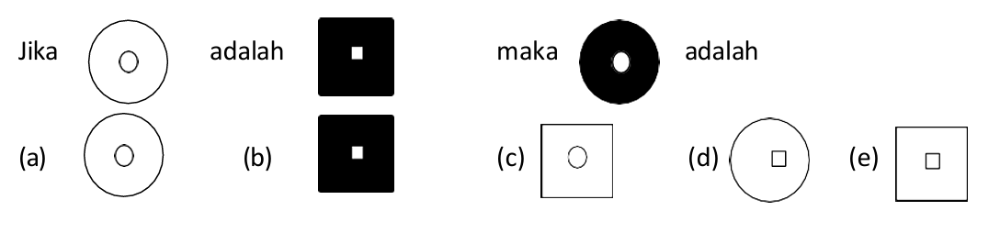
Mana dari ke-5 ini yang paling TIDAK mirip dengan 4 yang lain?
Mana dari ke-5 gambar ini yang paling melengkapi kalimat gambar tersebut?
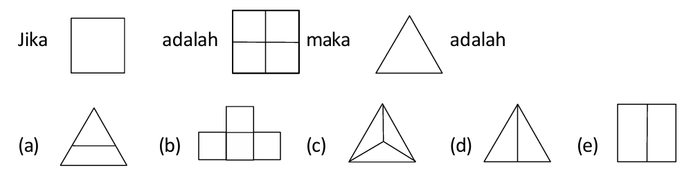
"Seekor ikan mempunyai kepala sepanjang 9mm. Buntutnya sama panjangnya dengan ukuran kepalanya ditambah setengah kali ukuran badannya. Ukuran badannya adalah sama dengan ukuran kepala ditambah ukuran buntutnya." Berapa panjang ikan tersebut?